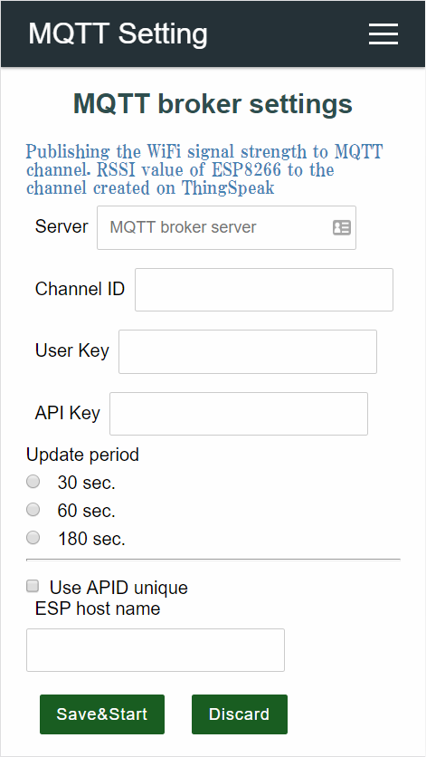

Custom Web pages with JSON
You can embed custom Web pages written in JSON into AutoConnect without AutoConnectAux & AutoConnectElements declaration. Custom Web page declaration by JSON can embed in the Sketch as a fixed string or can store in the external file such as SPIFFS for stream loading. Also, you can also load and save AutoConnectElements objects individually.1
By providing the following JSON document to AutoConnect, you can include the custom Web page like the below:


A JSON document for AutoConnect can contain the custom Web page multiple. You can further reduce the Sketch process by loading multiple pages of JSON document at once.
Adopt ArduinoJson v5 or v6
To handle AutoConnectAux and AutoConnectElements written in JSON, you need to install the ArduinoJson library. You can adopt either version 5 or version 6 for the ArduinoJson. AutoConnect supports both versions.
JSON objects & elements for the custom Web page¶
JSON document structure for AutoConnectAux¶
AutoConnectAux will configure custom Web pages with JSON objects. The elements that make up the object are as follows:
{
"title" : title,
"uri" : uri,
"menu" : true | false,
"auth": authentication,
"element" : element_array
}
title¶
- A title of the custom Web page. This is string value and specifies the title will be displayed in the AutoConnection menu.
uri¶
- String of URI path that specifies where to place the custom Web page. It needs to be a location from the root path including '/'.
menu¶
- This is a Boolean value indicating whether to include the custom Web page in the AutoConnect menu. If the page only responds to another page and you want to prevent the direct use from the menu, you can exclude from the AutoConnect menu. If this key is false, it will not appear in the menu.
auth¶
- It allows that this page requires authentication. An authentication specifies the following string that represents the authentication scheme.
-
- NONE: No authentication. This is default.
-
- BASIC: Apply Basic scheme.
-
- DIGEST: Apply Digest scheme.
element¶
- Describe an array of JSON objects as element_array. It is a JSON object array of the AutoConnectElements that make up the custom Web page.
Order of elements on a custom Web page
The order in which AutoConnectElements are placed on a custom Web page is the order in the JSON document.
Multiple custom Web pages declaration in JSON document¶
You can put declarations of multiple custom Web pages in one JSON document. In that case, declare an array of each custom Web page with JSON. The following JSON document contains three custom Web pages:
[
{
"title" : "Page 1 title",
"uri" : "/page1",
"menu" : true,
"element" : [
{
"name" : "caption",
"type" : "ACText",
"value" : "hello, world"
},
{
"name" : "send",
"type" : "ACSubmit",
"uri" : "/page2"
}
]
},
{
"title" : "Page 1 title",
"uri" : "/page2",
"menu" : false,
"element" : [
{
"name" : "responds",
"type" : "ACText",
"value" : "Good day"
},
{
"name" : "send",
"type" : "ACSubmit",
"uri" : "/page3"
}
]
},
{
"title" : "Page 3 title",
"uri" : "/page3",
"menu" : true,
"element" : [
{
"name" : "responds",
"type" : "ACText",
"value" : "bye"
}
]
}
]
The above custom Web page definitions can be loaded in a batch using the AutoConnect::load function.
JSON object for AutoConnectElements¶
JSON description for AutoConnectElements describes as an array in the element with arguments of each constructor.
{
"name" : name,
"type" : type,
"posterior" : posterior,
key_according_to_type : the_value | array_of_value,
[ key_according_to_type : the_value | array_of_value ]
}
name¶
- A string of the name for the element.
type¶
- A string of the type for the element. For this type, specify the following string corresponding to each element.
-
- AutoConnectButton: ACButton
-
- AutoConnectCheckbox: ACCheckbox
-
- AutoConnectElement: ACElement
-
- AutoConnectFile: ACFile
-
- AutoConnectInput: ACInput
-
- AutoConnectRadio: ACRadio
-
- AutoConnectSelect: ACSelect
-
- AutoConnectStyle: ACStyle
-
- AutoConnectSubmit: ACSubmit
-
- AutoConnectText: ACText
posterior¶
- Specifies a tag to add behind the HTML code generated from the element. Its purpose is to place elements on the custom Web page as intended by the user sketch. You can use the posterior key with the following values to arrange vertically or horizontal when the elements do not have the intended position on the custom Web Page specifying the following:
-
- none : No generate additional tags.
-
- br : Add a
<br>tag to the end of the element.
- br : Add a
-
- par : Include the element in the
<p> ~ </p>tag.
- par : Include the element in the
key_according_to_type¶
This is different for each AutoConnectElements, and the key that can be specified by the type of AutoConnectElements is determined.
ACButton¶
-
- value : Specifies the button label. This value also applies to the
valueattribute of an HTMLbuttontag.
- value : Specifies the button label. This value also applies to the
-
- action : Specifies an action to be fire on a mouse click on the button. It is mostly used with a JavaScript to activate a script, or it directly describes a JavaScript.
ACCheckbox¶
-
- value : Specifies the value to be supplied to the checkbox. It will be packed in the query string as
name=valuewhen the checkbox is ticked.
- value : Specifies the value to be supplied to the checkbox. It will be packed in the query string as
-
- label : Specifies a label of the checkbox. Its placement is always to the right of the checkbox.
-
- checked : Specifies checking status as a boolean value. The value of the checked checkbox element is packed in the query string and sent.
ACElement¶
-
- value : Specifies the source code of generating HTML. The value is native HTML code and is output as HTML as it is.
ACFile¶
-
- value : The file name of the upload file will be stored. The
valueis read-only and will be ignored if specified.
- value : The file name of the upload file will be stored. The
-
- label : Specifies a label of the file selection box. Its placement is always to the left of the file selection box.
-
-
- store : Specifies the destination to save the uploaded file. Its value accepts one of the following:
-
- fs : Save as the SPIFFS file in flash of ESP8266/ESP32 module. If the valid file system of the ESP8266 module incorporating the Sketch is LittleFS, AutoConnect assumes the file system to be LittleFS. However, it does not sense the actual file system, so If the Sketch implementation does not match the file system on the ESP8266 depends, a file writing error will occur.
-
- sd : Save to an external SD device connected to ESP8266/ESP32 module.
-
- extern : Pass the content of the uploaded file to the uploader which is declared by the Sketch individually. Its uploader must inherit AutoConnectUploadHandler class and implements _open, _write and _close function.
A valid filesystem of ESP8266 on board flash
AutoConnect has assumed LittleFS as a valid file system since v1.2.0 enhancement. On the other hand, the ESP8266 arduino core has supported LittleFS officially since a release 2.7.0.
LittleFS support in AutoConnect relies on the FS instance declared by the arduino core used at compile-time per project, and its FS instance will acquire by either the SPIFFS class or the LittleFS class. That is, you need to choose which file system will be available in the actual Sketch and make consistent it with AutoConnect assumed file system. So, you can choose which one uses the file systems per project via adjustment the AC_USE_SPIFFS macro enable or disable. AutoConnect determines the available file system by the AC_USE_SPIFFS macro which defined in AutoConnectDefs.h header file. -
ACInput¶
-
- value : Specifies the initial text string of the input box. If this value is omitted, placeholder is displayed as the initial string.
-
- label : Specifies a label of the input box. Its placement is always to the left of the input box.
-
- placeholder : Specifies short hint of the input box.
-
-
- apply : Specifies the type of input that the text box accepts. Its value accepts one of the following:
-
- text : A text.
-
- password : Password input field. The text is obscured so that it cannot be read, usually by replacing each character with a symbol such as the asterisk ("
*") or a dot ("•").
- password : Password input field. The text is obscured so that it cannot be read, usually by replacing each character with a symbol such as the asterisk ("
-
- number : A field let the user enter number characters only.
-
ACRadio¶
-
- value : Specifies the collection of radio buttons as an array element.
-
- label : Specifies a label of the collection of radio buttons, not for each button. The arrangement will be the top or left side according to the
arrange.
- label : Specifies a label of the collection of radio buttons, not for each button. The arrangement will be the top or left side according to the
-
-
- arrange : Specifies the orientation of the radio buttons. Its value accepts one of the following:
-
- horizontal : Horizontal arrangement.
-
- vertical : Vertical arrangement.
-
-
- checked : Specifies the index number (1-based) of the radio buttons collection to be checked.
ACSelect¶
-
- label : Specifies a label of the drop-down list. Its placement is always to the left of the drop-down list.
-
- option : Specifies the initial value collection of the drop-down list as an array element.
ACStyle¶
-
- value : Specifies the custom CSS code.
ACSubmit¶
-
- value : Specifies a label of the submit button.
-
- uri : Specifies the URI to send form data when the button is clicked.
ACText¶
-
- value : Specifies a content and also can contain the native HTML code, but remember that your written code is enclosed by the div tag.
-
- style : Specifies the qualification style to give to the content and can use the style attribute format as it is.
-
- format : Specifies how to interpret the value. It specifies the conversion format when outputting values. The format string conforms to the C-style printf library functions, but depends on the espressif sdk implementation. The conversion specification is valid only for %s format. (Left and Right justification, width are also valid.)
AutoConnect JSON parsing process is not perfect
It is based on analysis by ArduinoJson, but the semantic analysis is simplified to save memory. Consequently, it is not an error that a custom Web page JSON document to have unnecessary keys. It will be ignored.
Loading JSON document¶
Loading to AutoConnect¶
There are two main ways to load the custom Web pages into AutoConnect.
-
Load directly into AutoConnect
This way does not require an explicit declaration of AutoConnectAux objects with sketches and is also useful when importing the custom Web pages JSON document from an external file such as SPIFFS because the page definition and sketch coding structure can be separated.
Using the AutoCoonnect::load function, AutoConnect dynamically generates the necessary AutoConnectAux objects internally based on the custom Web page definition of the imported JSON document content. In the Sketch, the generated AutoConnectAux object can be referenced using the AutoConnect::aux function. You can reach the AutoConnectElements you desired using the AutoConnectAux::getElement function of its AutoConnectAux.
In the following example, it loads in a batch a JSON document of custom Web pages stored in SPIFFS and accesses to the AutoConnectInput element.
[ { "title": "page1", "uri": "/page1", "menu": true, "element": [ { "name": "input1", "type": "ACInput" } ] }, { "title": "page2", "uri": "/page2", "menu": true, "element": [ { "name": "input2", "type": "ACInput" } ] } ]AutoConnect portal; File page = SPIFFS.open("/custom_page.json", "r"); portal.load(page); page.close(); AutoConnectAux* aux = portal.aux("/page1"); AutoConnectInput& input1 = aux->getElement<AutoConnectInput>("input1"); -
Load to AutoConnectAux and join to AutoConnect
This way declares AutoConnectAux in the Sketch and loads the custom Web pages JSON document there. It has an advantage for if you want to define each page of a custom Web page individually or allocate AutoConnectAux objects dynamically on the Sketch side.
After loading a JSON document using the AutoConnectAux::load function by each, integrate those into AutoConnect using the AutoConnect::join function.
In the following example, you can see the difference between two sketches in a sketch modified using the AutoConnectAux::load.
{ "title": "page1", "uri": "/page1", "menu": true, "element": [ { "name": "input1", "type": "ACInput" } ] }{ "title": "page2", "uri": "/page2", "menu": true, "element": [ { "name": "input2", "type": "ACInput" } ] }AutoConnect portal; AutoConnectAux page1; AutoConnectAux page2; File page = SPIFFS.open("/custom_page1.json", "r"); page1.load(page); page.close(); page = SPIFFS.open("/custom_page2.json", "r"); page2.load(page); page.close(); portal.join( { page1, page2 } ); AutoConnectInput& input1 = page1.getElement<AutoConnectInput>("input1");
Loading from the streamed file¶
AutoConnect supports loading of JSON document from the following instances:
- String
- PROGMEM
- Stream
To load custom Web pages JSON document into AutoConnect, use the load function of the AutoConnect class. Its JSON document can read must be completed as a description interpretable by the ArduinoJson library. It cannot import custom Web pages if there are syntax errors for the JSON. If you can not see the custom Web page prepared by JSON, you can check the syntax with ArduinoJson Assistant. It is useful for pre-checking.
bool AutoConnect::load(const String& aux)
bool AutoConnect::load(const __FlashStringHelper* aux)
bool AutoConnect::load(Stream& aux)
AutoConnect portal;
// Loading from String
const String aux = String("{\"title\":\"Page 1 title\",\"uri\":\"/page1\",\"menu\":true,\"element\":[{\"name\":\"caption\",\"type\":\"ACText\",\"value\":\"hello, world\"}]}");
portal.load(aux);
// Loading from PROGMEM
const char aux[] PROGMEM = R"raw(
{
"title" : "Page 1 title",
"uri" : "/page1",
"menu" : true,
"element" : [
{
"name" : "caption",
"type" : "ACText",
"value" : "hello, world"
}
]
}
)raw";
portal.load(FPSTR(aux));
// Loading from Stream assumes "aux.json" file should be store in SPIFFS.
File aux = SPIFFS.open("aux.json", "r");
portal.load(aux);
aux.close();
AutoConnect passes the given JSON document directly to the parseObject() function of the ArduinoJson library for parsing. Therefore, the constraint of the parseObject() function is applied as it is in the parsing of the JSON document for the AutoConnect. That is, if the JSON string is read-only, duplicating the input string occurs and consumes more memory.
Adjust the JSON document buffer size¶
AutoConnect uses ArduinoJson library's dynamic buffer to parse JSON documents. Its dynamic buffer allocation scheme depends on the version 5 or version 6 of ArduinoJson library. Either version must have enough buffer to parse the custom web page's JSON document successfully. AutoConnect has the following three constants internally to complete the parsing as much as possible in both ArduinoJson version. These constants are macro defined in AutoConnectDefs.h.
If memory insufficiency occurs during JSON document parsing, you can adjust these constants to avoid insufficiency by using the JsonAssistant with deriving the required buffer size in advance.
#define AUTOCONNECT_JSONBUFFER_SIZE 256
#define AUTOCONNECT_JSONDOCUMENT_SIZE (8 * 1024)
#define AUTOCONNECT_JSONPSRAM_SIZE (16* 1024)
AUTOCONNECT_JSONBUFFER_SIZE¶
This is a unit size constant of DynamicJsonBuffer and works when the library used is ArduinoJson version 5. A buffer size of the JSON document increases with this unit. This value relates to the impact of the fragmented heap area. If it is too large, may occur run-out of memory.
AUTOCONNECT_JSONDOCUMENT_SIZE¶
This is a size of DynamicJsonDocument for ArduinoJson version 6. This buffer is not automatically expanding, and the size determines the limit.
AUTOCONNECT_JSONPSRAM_SIZE¶
For ESP32 module equips with PSRAM, you can allocate the JSON document buffer to PSRAM. Buffer allocation to PSRAM will enable when PSRAM:Enabled option selected in the Arduino IDE's Board Manager menu. It is available since ArduinoJson 6.10.0.
Saving JSON document¶
the Sketch can persist AutoConnectElements as a JSON document and also uses this function to save the values entered on the custom Web page. And you can reload the saved JSON document into AutoConnectElements as the field in a custom Web page using the load function.
-
Loading and saving AutoConnect parameters adopt this method. ↩